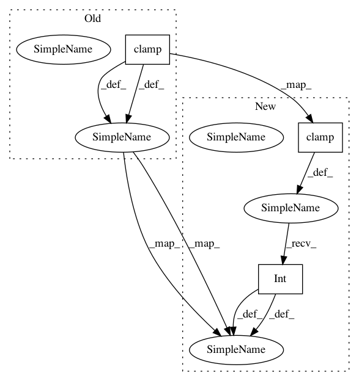

81731eb1f4cb24f095a85355176f5071af0346dd,torchbearer/callbacks/cutout.py,BatchCutout,__call__,#BatchCutout#,176
Before Change
x = torch.randint(w, (b,)).long()
y1 = (y - self.height // 2).clamp(0, h)
y2 = (y + self.height // 2).clamp(0, h)
x1 = (x - self.width // 2).clamp(0, w)
x2 = (x + self.width // 2).clamp(0, w)
for batch in range(b):
After Change
x = torch.randint(w, (b,)).long()
y1 = (y - self.height // 2).clamp(0, h).int()
y2 = (y + self.height // 2).clamp(0, h).int()
x1 = (x - self.width // 2).clamp(0, w).int()
x2 = (x + self.width // 2).clamp(0, w).int()
for batch in range(b):
In pattern: SUPERPATTERN
Frequency: 4
Non-data size: 3
Instances
Project Name: ecs-vlc/torchbearer
Commit Name: 81731eb1f4cb24f095a85355176f5071af0346dd
Time: 2019-10-11
Author: ethanwharris@gmail.com
File Name: torchbearer/callbacks/cutout.py
Class Name: BatchCutout
Method Name: __call__